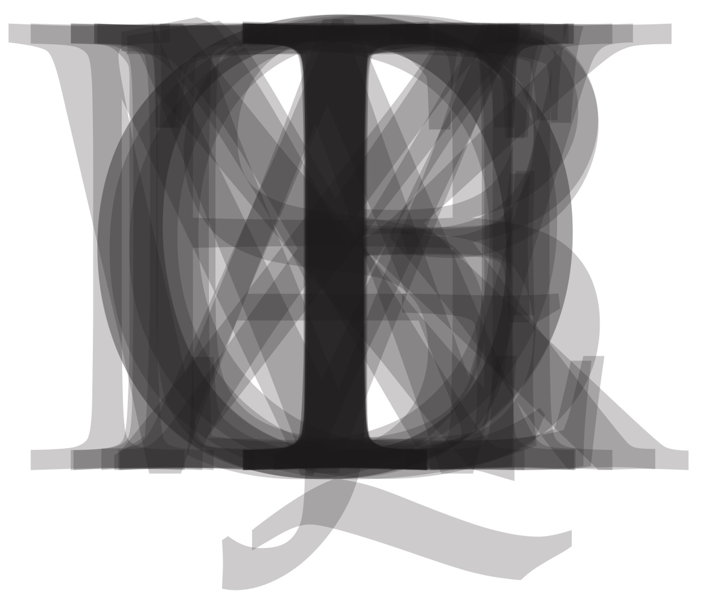

|

|
Hell, -n. A place where outcast persons and things are gathered; a place into which a printer throws his broken type.
-paraphrased from Webster's Dictionary
|
FAQ of the Kitchen
What is Hell's Kitchen?
Hell's Kitchen is kind of esoteric. Think of it as a means of sharing creative content between groups. Member organizations agree to allow other member organizations to reproduce their material in order to reach a wider audience. In exchange, they are given the right to reproduce and promote material from other members.
How much does it cost to be a member of Hell's Kitchen?
It's a free service for small organizations. It's hard enough putting something of quality out for the public; Hell's Kitchen is supposed to make it easier by providing a larger audience and more material to choose from.
Since Hell's Kitchen is free, I can reproduce material from Hell's Kitchen without asking, right?
You need to join Hell's Kitchen to have the right to reproduce our stuff. The original creators will definitely want to know -- and have a right to know -- where their work is appearing.
What's the catch?
There is no catch. Hell's Kitchen began because one small publication in Rochester, NY worried about having enough material each week. It turned out the fears were unfounded, but the idea of a content sharing organization that offers advice and a framework for small publications to reach larger audiences is useful.
It's all about reaching a wider audience, making things easier for one another, and having fun. There are organizations similar to Hell's Kitchen for the professional press, and even for college newspapers, but not for more creative groups.
We know (believe me, we know) that most small creative groups have very limited budgets. That's why it costs nothing to join Hell's Kitchen.
Where do I sign?
Visit our Join Hell's Kitchen page.
We'll ask you to sign an agreement giving us the right to reproduce your creative content and send it to other member organizations for them to use. If you like the agreement, you can sign it and become a member.
How do I contact the Kitchen?
Drop us an email at hellskitchenorg@gmail.com
About us - Member Groups - Join the Kitchen
FAQ
|